用法：A型题点选项即判；X型题先多选、再点【判卷】；答完自动展开解析。刷完本课再过一遍底部【本课速记卡】，效果最好。
一、再生6 题
A型·单选Q1P1 · 再生
生理性再生的主要形式是
答案与解析
答案：D
生理性再生：主要是细胞的自我更新（如红细胞约 120 天更新一次）；病理性再生主要是恢复组织结构和功能（完全性/不完全性）。
📖 讲义定位：P1 · 再生
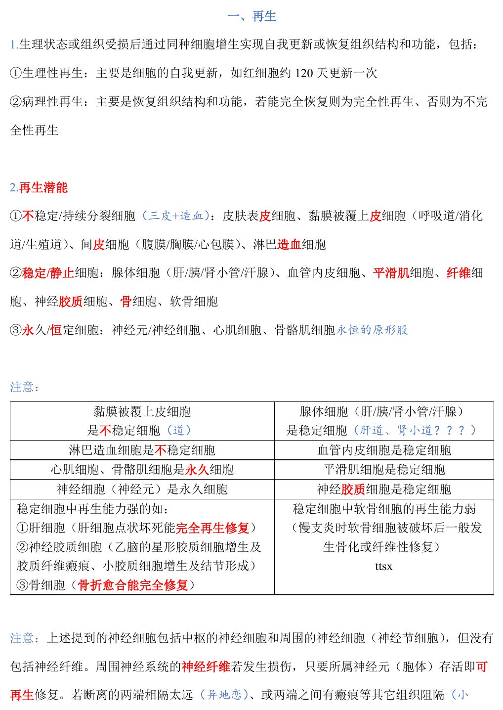
📷 讲义原图 · P1 · 再生
A型·单选Q2P1 · 再生潜能
下列属于不稳定（持续分裂）细胞的是
答案与解析
答案：B
不稳定细胞（『三皮＋造血』）：皮肤表皮、黏膜被覆上皮（呼吸道/消化道/生殖道）、间皮细胞、淋巴造血细胞。
📖 讲义定位：P1 · 再生潜能
A型·单选Q3P1 · 再生潜能
下列属于稳定（静止）细胞的是
答案与解析
答案：A
稳定细胞：腺体细胞（肝/胰/肾小管/汗腺）、血管内皮、平滑肌、纤维细胞、神经胶质细胞、骨细胞、软骨细胞。
📖 讲义定位：P1 · 再生潜能
X型·多选Q4P1 · 再生潜能
属于永久（恒定）细胞的有
答案与解析
答案：BCD
永久细胞：神经元、心肌细胞、骨骼肌细胞；平滑肌是稳定细胞（A 错）。
📖 讲义定位：P1 · 再生潜能
A型·单选Q5P1 · 再生潜能
稳定细胞中再生能力较强的有肝细胞、骨细胞和
答案与解析
答案：C
稳定细胞中再生能力强的：肝细胞（点状坏死能完全再生）、神经胶质细胞（乙脑胶质瘢痕）、骨细胞（骨折完全修复）；软骨细胞再生能力弱（破坏后骨化或纤维性修复）。
📖 讲义定位：P1 · 再生潜能
A型·单选Q6P1–2 · 再生潜能
周围神经纤维损伤后，若断离两端相隔太远或有瘢痕阻隔，再生的神经纤维会
答案与解析
答案：D
周围神经纤维只要所属神经元（胞体）存活即可再生；若两端相隔太远、有瘢痕阻隔或失去远端，则再生纤维不能到达远端、与结缔组织混杂卷曲成团＝创伤性神经纤维瘤。
📖 讲义定位：P1–2 · 再生潜能
二、纤维性修复（肉芽组织）8 题
A型·单选Q7P2 · 肉芽组织
肉芽组织一般在组织损伤后多长时间开始形成
答案与解析
答案：A
肉芽组织是增生旺盛的新生幼稚结缔组织，一般在损伤 2-3 天后开始形成。
📖 讲义定位：P2 · 肉芽组织
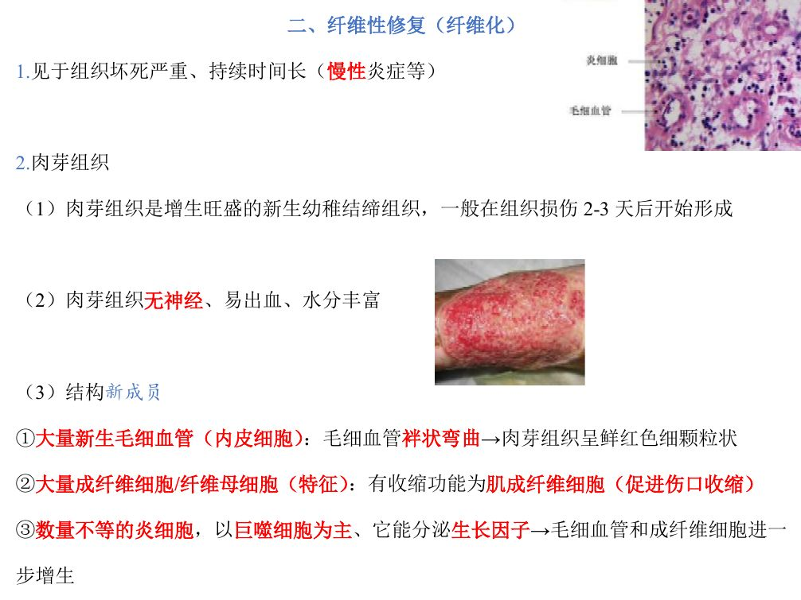
📷 讲义原图 · P2 · 肉芽组织
A型·单选Q8P2 · 肉芽组织
肉芽组织的组成中，具有收缩功能、促进伤口收缩的细胞是
答案与解析
答案：C
肉芽组织中的成纤维细胞部分具有平滑肌细胞的收缩功能＝肌成纤维细胞，促进伤口收缩。
📖 讲义定位：P2 · 肉芽组织
A型·单选Q9P2 · 肉芽组织
肉芽组织呈鲜红色细颗粒状外观，主要是因为
答案与解析
答案：B
结构：①大量新生毛细血管（内皮细胞）——袢状弯曲→鲜红细颗粒状 ②大量成纤维细胞（特征）③数量不等的炎细胞（以巨噬细胞为主，分泌生长因子）。肉芽组织无神经、易出血、水分丰富。
📖 讲义定位：P2 · 肉芽组织
X型·多选Q10P3 · 肉芽组织
肉芽组织的功能有
答案与解析
答案：ACD
B 错：肉芽组织功能为①填补缺损②抗感染保护创面③机化或包裹（坏死组织、血栓、炎性渗出物、异物）。
📖 讲义定位：P3 · 肉芽组织
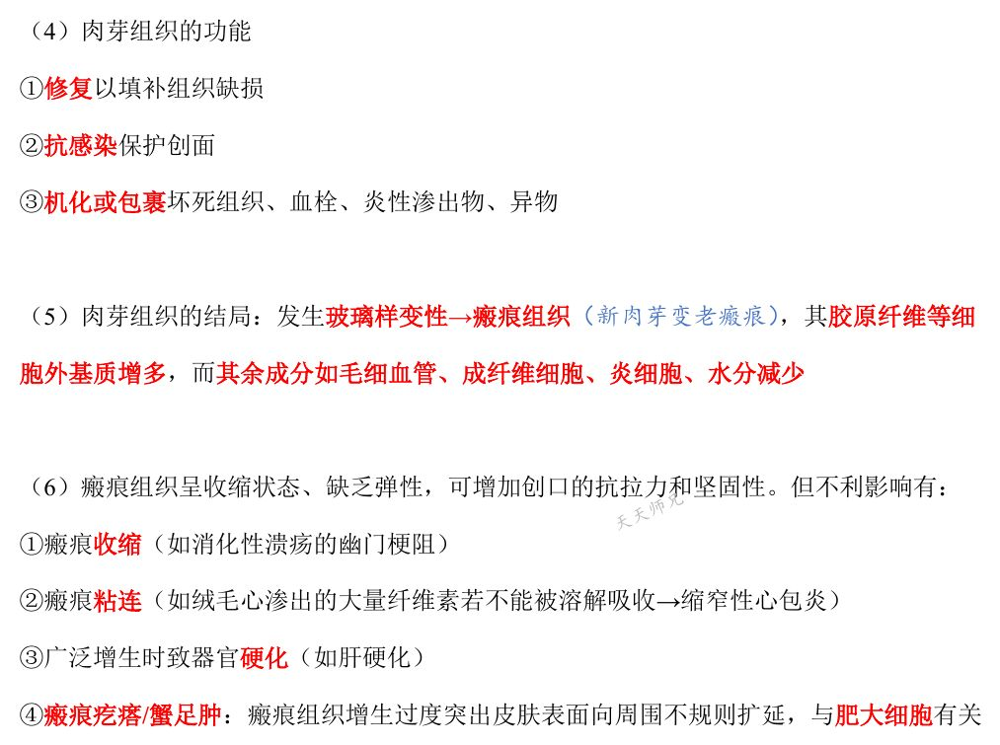
📷 讲义原图 · P3 · 肉芽组织
A型·单选Q11P3 · 肉芽组织
肉芽组织的结局是
答案与解析
答案：B
『新肉芽变老瘢痕』：肉芽组织玻璃样变性→瘢痕组织（胶原纤维等细胞外基质增多，其余成分减少）。
📖 讲义定位：P3 · 肉芽组织
A型·单选Q12P3 · 瘢痕组织
瘢痕疙瘩（蟹足肿）的发生与哪种细胞有关
答案与解析
答案：D
瘢痕疙瘩/蟹足肿：瘢痕组织增生过度、突出皮肤表面并向周围不规则扩延，与肥大细胞有关。
📖 讲义定位：P3 · 瘢痕组织
A型·单选Q13P4 · 注意
急性血吸虫虫卵结节周围的肉芽组织中，炎细胞以什么为主
答案与解析
答案：C
肉芽组织中的炎细胞一般以巨噬细胞为主；但急性血吸虫虫卵结节周围的肉芽组织以嗜酸性粒细胞为主。
📖 讲义定位：P4 · 注意
X型·多选Q14P4 · 注意
发生机化时，组织中出现的特征性细胞有
答案与解析
答案：AB
机化由肉芽组织取代完成——特征细胞为内皮细胞（新生毛细血管）和成纤维细胞；类上皮细胞、多核巨细胞见于肉芽肿性炎（D、C 错）。
📖 讲义定位：P4 · 注意
三、创伤愈合5 题
A型·单选Q15P4 · 骨折愈合
骨折愈合的正确顺序是
答案与解析
答案：A
骨折愈合：血肿形成→纤维性骨痂（暂时性骨痂）→骨性骨痂→骨痂改建/再塑。
📖 讲义定位：P4 · 骨折愈合
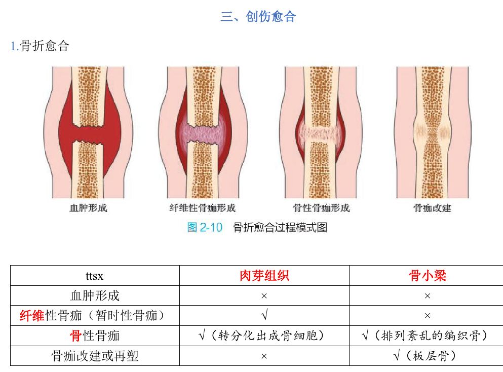
📷 讲义原图 · P4 · 骨折愈合
A型·单选Q16P4 · 骨折愈合
骨折愈合过程中，骨痂改建（再塑）形成的是
答案与解析
答案：C
骨性骨痂为排列紊乱的编织骨（肉芽组织转分化出成骨细胞）；骨痂改建后形成板层骨。
📖 讲义定位：P4 · 骨折愈合
A型·单选Q17P5 · 皮肤创伤愈合
关于一期愈合，下列叙述正确的是
答案与解析
答案：A
一期愈合（好）：缺损少、创缘齐、无感染；表皮 1-2 天覆盖伤口、肉芽 2-3 天从边缘长入；瘢痕少、线状、收缩不明显。二期愈合：坏死多、炎症重、瘢痕大不规则、收缩明显、时间长。
📖 讲义定位：P5 · 皮肤创伤愈合
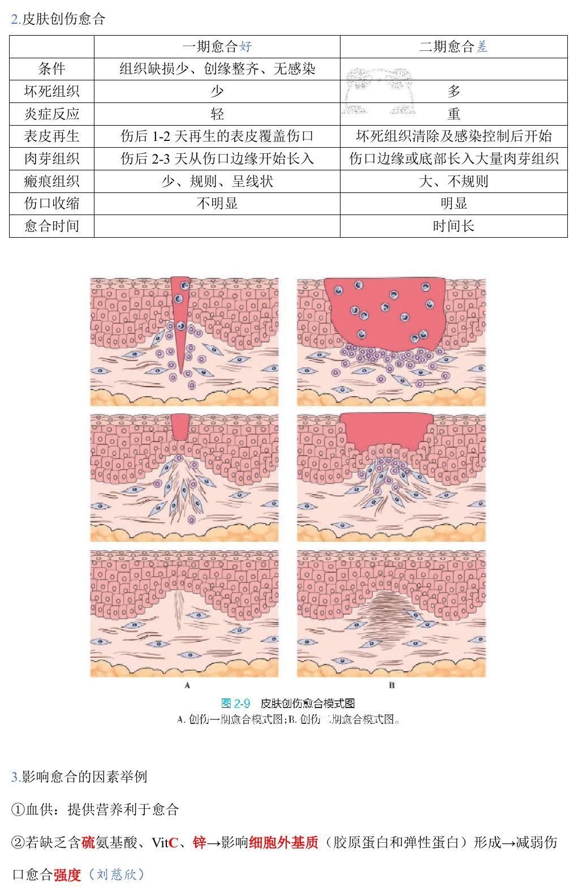
📷 讲义原图 · P5 · 皮肤创伤愈合
A型·单选Q18P5 · 影响愈合因素
影响伤口愈合强度最主要的细胞外基质成分形成，需要
答案与解析
答案：D
缺乏含硫氨基酸、VitC、锌→影响细胞外基质（胶原蛋白和弹性蛋白）形成→减弱伤口愈合强度；良好血供提供营养利于愈合。
📖 讲义定位：P5 · 影响愈合因素
A型·单选Q19P6 · 完全修复
下列创伤中，能完全修复（恢复原组织结构）的是
答案与解析
答案：B
常考的完全修复例子：①肝细胞点状坏死和嗜酸性坏死 ②急性糜烂性胃炎 ③Ⅰ度烧伤、浅Ⅱ度烧伤 ④骨折、肌腱断裂（功能恢复后）。
📖 讲义定位：P6 · 完全修复
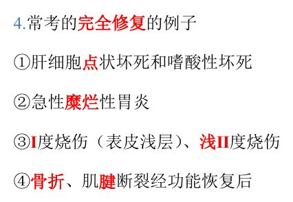
📷 讲义原图 · P6 · 完全修复
三、创伤愈合（续）2 题
X型·多选Q20P3 · 瘢痕组织
瘢痕组织的不利影响有
答案与解析
答案：BCD
A 是有利作用。瘢痕呈收缩状态、缺乏弹性：不利影响＝①瘢痕收缩②瘢痕粘连③广泛增生致器官硬化④瘢痕疙瘩。
📖 讲义定位：P3 · 瘢痕组织
A型·单选Q21P4 · 注意
肉芽组织与肉芽肿的本质区别是
答案与解析
答案：D
经典干扰：肉芽组织（修复，含毛细血管、成纤维细胞、炎细胞）VS 肉芽肿（炎症，巨噬细胞及其转化细胞团块）。
📖 讲义定位：P4 · 注意
本课速记卡
再生
- 再生潜能三类：不稳定（三皮＋造血：皮肤表皮、黏膜被覆上皮、间皮、淋巴造血）；稳定（腺体细胞、血管内皮、平滑肌、纤维细胞、神经胶质、骨、软骨）；永久（神经元、心肌、骨骼肌）
- 稳定细胞中再生强：肝细胞、神经胶质细胞、骨细胞；软骨弱（骨化/纤维修复）
- 周围神经纤维：神经元存活即可再生；阻隔→创伤性神经纤维瘤
肉芽组织（修复）
- 2-3 天开始形成；无神经、易出血、水分丰富
- 结构：新生毛细血管（鲜红细颗粒状）＋成纤维细胞（含肌成纤维细胞，促收缩）＋炎细胞（巨噬为主）
- 功能：填补缺损、抗感染护创面、机化或包裹
- 结局：玻璃样变→瘢痕（ECM↑、其余↓）；不利：收缩/粘连/硬化/瘢痕疙瘩（肥大细胞）
- 肉芽组织≠肉芽肿；急性虫卵结节周围肉芽以嗜酸性粒为主
创伤愈合
- 骨折：血肿→纤维性骨痂→骨性骨痂（编织骨）→改造（板层骨）
- 一期愈合：缺损少、创缘齐、无感染→瘢痕少线状；二期：瘢痕大、收缩明显
- 含硫氨基酸/VitC/锌→细胞外基质；血供利于愈合
- 完全修复例子：肝点状坏死与嗜酸性坏死、急性糜烂性胃炎、Ⅰ度/浅Ⅱ度烧伤、骨折与肌腱断裂
📚 网站题库（导入）6 组 · 10 题
说明：本部分为外部题库导入（来源：「西综题库」网站 · 病理学），题干、选项与答案保留原样；标注「教师补充」的答案未经讲义逐项复核。做题方式：点字母选择（多选后点【判卷】；答案可点开「答案与出处」查看）。
不稳定/持续分裂细胞B型题
A 皮肤表皮细胞
B 腹膜/胸膜/心包膜
C 淋巴造血细胞
D 腺体细胞（肝/胰/肾小管/汗腺）
E 呼吸道
F 平滑肌细胞
G 消化道
H 纤维细胞
I 神经胶质细胞
J 生殖道
K 骨细胞
L 神经元/神经细胞
M 血管内皮细胞
N 心肌细胞
O 软骨细胞
P 骨骼肌细胞
网站题W1第22讲 · 第1页
不稳定/持续分裂细胞
答案与出处
答案：ABCEGJ
📖 第22讲 · 第1页
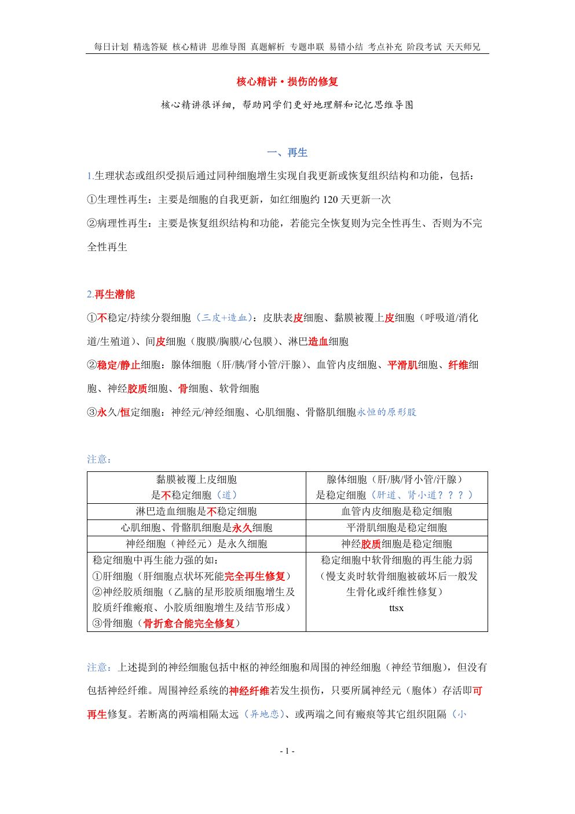
📷 讲义原图 · 第22讲 · 第1页
网站题W2第22讲 · 第1页
稳定/静止细胞
答案与出处
网站题W3第22讲 · 第1页
永久/恒定细胞
答案与出处
骨性骨痂B型题
A 转分化出成骨细胞
B 排列紊乱的编织骨
C 板层骨
网站题W4第22讲 · 第4页
骨性骨痂
答案与出处
答案：AB
📖 第22讲 · 第4页
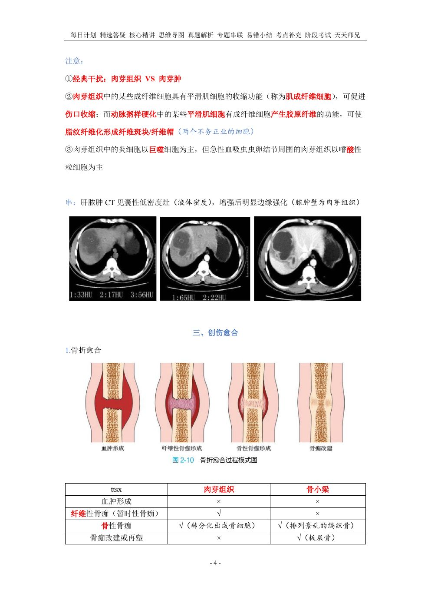
📷 讲义原图 · 第22讲 · 第4页
网站题W5第22讲 · 第4页
骨痂改建或再塑
答案与出处
一期愈合B型题
A 组织缺损少、创缘整齐、无感染
B 伤后1-2天，再生的表皮覆盖伤口
C 伤口边缘或底部长入大量肉芽组织
D 伤口收缩不明显
E 愈合时间长
F 坏死组织少
G 炎症反应重
H 表皮再生在坏死组织清除及感染控制后开始
I 肉芽组织在伤后2-3天从伤口边缘开始长入
J 瘢痕组织少、规则、呈线状
K 伤口收缩明显
L 坏死组织多
M 炎症反应轻
N 瘢痕组织大、不规则
网站题W6第22讲 · 第5页
一期愈合
答案与出处
答案：ABDFIJM
📖 第22讲 · 第5页
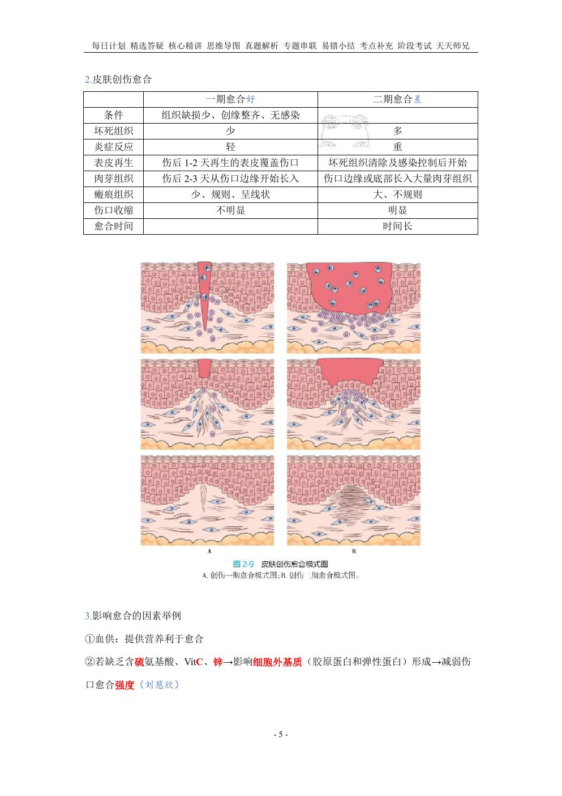
📷 讲义原图 · 第22讲 · 第5页
网站题W7第22讲 · 第5页
二期愈合
答案与出处
脑内的神经干细胞不能分化为单项选择教师补充
A 星形胶质细胞
B 少突胶质细胞
C 小胶质细胞
D 神经细胞
网站题W8第22讲 · 第1页
脑内的神经干细胞不能分化为(单选)
答案与出处
在组织修复过程中,间充质干细胞的分化方向包括多项选择教师补充
网站题W9
在组织修复过程中,间充质干细胞的分化方向包括(多选)
答案与出处
一般手术切口在第 7 天左右拆线的原因主要是单项选择教师补充
A 肉芽组织已形成
B 胶原纤维已产生
C 表皮已再生
D 伤口已愈合
网站题W10第22讲 · 第7页
一般手术切口在第 7 天左右拆线的原因主要是(单选)
答案与出处
答案：B
📖 第22讲 · 第7页
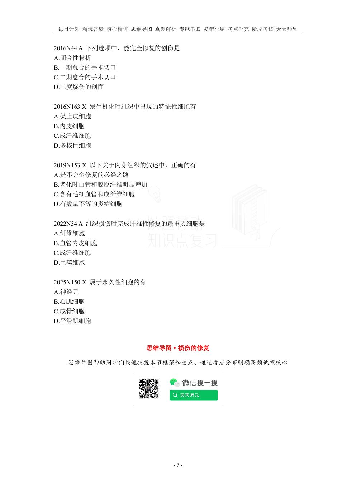
📷 讲义原图 · 第22讲 · 第7页
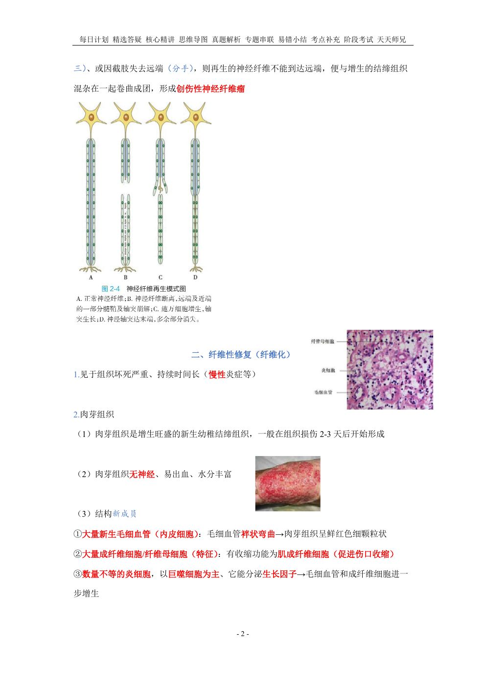
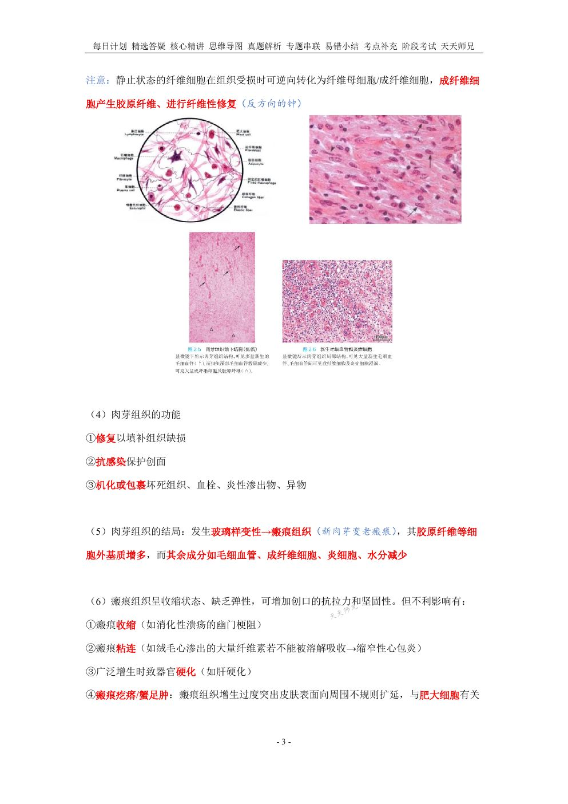
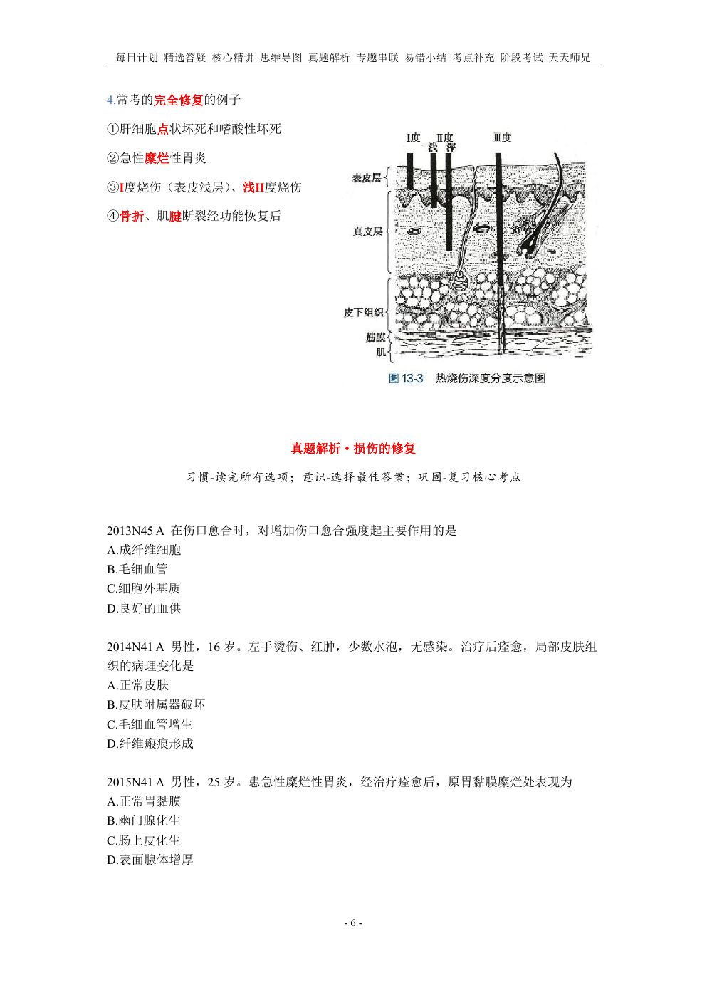